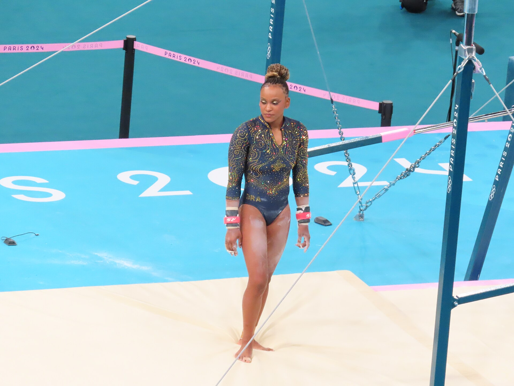

O Brasil chega ao Campeonato Mundial de Ginástica Artística de 2026 carregando uma história recente de conquistas que transformou sua posição no cenário internacional. Com 12 atletas convocados, divididos igualmente entre as equipes feminina e masculina, a seleção brasileira participará da 54ª edição do Mundial.
A presença de Rebeca Andrade, maior medalhista olímpica da história do Brasil, é um dos principais atrativos da competição. Ao lado de Flávia Saraiva e Lorrane Oliveira, a ginasta integra um grupo que combina experiência em grandes decisões com atletas de uma nova geração. No masculino, Arthur Nory e Diogo Soares estão entre os nomes que representam o país na disputa internacional.
O Mundial de 2026 também oferece um novo capítulo para uma seleção que conquistou a prata por equipes no Campeonato Mundial de 2023, em Antuérpia, e o bronze por equipes nos Jogos Olímpicos de Paris 2024. Mais do que a busca por medalhas individuais, o desafio brasileiro envolve manter a competitividade coletiva, alcançar finais e consolidar o trabalho desenvolvido na ginástica artística nacional.
A edição de Roterdã reunirá disputas por equipes, no individual geral e por aparelhos, com três dias de classificatórias e seis dias dedicados às finais. O desempenho nas primeiras apresentações será decisivo para definir quais ginastas continuarão na competição e disputarão os títulos mundiais.
A principal estrela brasileira no Mundial
A trajetória de Rebeca Andrade mudou o patamar da ginástica artística brasileira. Campeã olímpica do salto em Tóquio 2020 e do solo em Paris 2024, a atleta acumulou seis medalhas olímpicas nas duas edições e se tornou a maior medalhista do país na história dos Jogos.
Nos Campeonatos Mundiais, Rebeca também construiu resultados históricos. Em Liverpool 2022, conquistou o ouro no individual geral, tornando-se a primeira brasileira campeã mundial da prova. No Mundial de Antuérpia 2023, voltou ao lugar mais alto do pódio no salto, além de contribuir para a inédita prata brasileira na disputa por equipes.
A dimensão dessas conquistas pode ser compreendida na trajetória de Rebeca Andrade na ginástica artística, marcada pela superação de lesões, evolução técnica e resultados que a colocaram entre as grandes referências internacionais da modalidade.
Na preparação para Roterdã, Rebeca participou da etapa de Szombathely da Copa do Mundo de Ginástica Artística, realizada em setembro, na Hungria. A brasileira conquistou a medalha de prata na trave de equilíbrio, terminando atrás de Flávia Saraiva, vencedora da prova.
A competição serviu como uma importante oportunidade de avaliação técnica antes do Mundial, especialmente pelo contato com a arbitragem internacional e pela possibilidade de testar a consistência das apresentações.
Flávia Saraiva e Lorrane Oliveira fortalecem o Brasil
Embora Rebeca concentre grande parte da atenção, a seleção feminina brasileira possui outras atletas com experiência internacional e resultados expressivos.
Flávia Saraiva chega ao Mundial de 2026 depois de uma campanha especialmente positiva na Copa do Mundo de Szombathely. A ginasta conquistou duas medalhas de ouro, nas paralelas assimétricas e na trave de equilíbrio, além da prata no solo.
Foi uma demonstração importante de versatilidade, considerando que os três aparelhos exigem características técnicas diferentes e podem abrir oportunidades tanto nas disputas individuais quanto na competição coletiva.
Flávia também possui um histórico relevante em Campeonatos Mundiais. Em 2023, conquistou o bronze no solo em Antuérpia e participou da equipe medalhista de prata, resultados que reforçaram sua importância para a ginástica brasileira.
Lorrane Oliveira, outra integrante da campanha histórica de 2023, também apresentou um resultado positivo na preparação para Roterdã. Em Szombathely, conquistou o bronze no solo.
O desempenho brasileiro na Hungria oferece uma referência recente para avaliar o grupo: a delegação encerrou aquela etapa da Copa do Mundo com seis medalhas, sendo três ouros, duas pratas e um bronze.
As referências no masculino
A seleção brasileira masculina também terá representantes experientes na competição.
Arthur Nory é um dos principais nomes do grupo. Medalhista olímpico de bronze no solo nos Jogos do Rio 2016, o ginasta possui uma carreira construída em grandes competições internacionais e no desenvolvimento de apresentações competitivas em aparelhos específicos.
Em Liverpool 2022, Nory conquistou o bronze mundial na barra fixa. Na preparação para a edição de Roterdã, voltou a se destacar nesse aparelho ao vencer a etapa de Szombathely da Copa do Mundo.
Diogo Soares também integra a equipe brasileira e representa uma das opções para a disputa do individual geral, prova que exige desempenho em todos os seis aparelhos masculinos.
Para o Brasil, a competição masculina oferece a oportunidade de buscar classificações para finais, melhorar a consistência das séries e enfrentar seleções com tradição internacional, como Japão, China e Estados Unidos.
Os brasileiros convocados para o Mundial
Seleção feminina:
- Rebeca Andrade
- Flávia Saraiva
- Lorrane Oliveira
- Gabriela Bouças
- Sophia Weisberg
- Thais Fidelis
Seleção masculina:
- Arthur Nory
- Bernardo Miranda
- Diogo Soares
- Johnny Oshiro
- Patrick Sampaio
- Vitaliy Guimarães
Simone Biles está fora do Mundial
Uma das ausências mais importantes do Campeonato Mundial de Ginástica Artística de 2026 será a norte-americana Simone Biles, considerada uma das maiores atletas da história da modalidade. A ginasta não integra a seleção dos Estados Unidos para a competição de Roterdã, na Holanda, encerrando a possibilidade de um novo confronto direto com Rebeca Andrade nesta edição do torneio.
Dona de 11 medalhas olímpicas, sendo sete de ouro, Biles construiu uma carreira extraordinária. Nos Campeonatos Mundiais, conquistou 30 medalhas, incluindo 23 títulos, números que a colocam como a ginasta mais condecorada da história.
A seleção americana chega a Roterdã com uma equipe renovada. Entre as convocadas está Hezly Rivera, integrante do time campeão olímpico por equipes em Paris 2024. A delegação feminina também conta com Skye Blakely, Charleigh Bullock, Reese Esponda e Claire Pease.
Mesmo sem Biles, o Mundial de 2026 reunirá campeões olímpicos e mundiais, além de jovens atletas que buscam conquistar espaço no cenário internacional. A competição também terá importância para o ciclo dos Jogos de Los Angeles 2028, já que as três melhores equipes de cada gênero garantirão classificação olímpica.
Estrelas internacionais confirmadas para o Mundial
Além dos brasileiros, a edição de Roterdã contará com atletas consagrados que chegam ao torneio com títulos importantes e condições de protagonizar algumas das principais disputas por medalhas.
A campeã olímpica que fez história pela Argélia
A argelina Kaylia Nemour é um dos nomes mais relevantes da ginástica artística feminina. Nos Jogos Olímpicos de Paris 2024, conquistou a medalha de ouro nas paralelas assimétricas, tornando-se a primeira ginasta representante de um país africano a conquistar uma medalha olímpica na modalidade.
A atleta confirmou seu protagonismo no Campeonato Mundial de 2025, realizado em Jacarta, na Indonésia, ao conquistar o título das paralelas assimétricas e a medalha de prata na trave de equilíbrio.
A argelina consta na lista de participantes de Roterdã e será uma das principais atrações das disputas femininas, especialmente nas paralelas assimétricas.
Tricampeão mundial e campeão olímpico
O japonês Daiki Hashimoto chega ao Campeonato Mundial de 2026 como um dos grandes nomes da ginástica masculina.
Nos Jogos Olímpicos de Tóquio 2020, realizados em 2021, conquistou duas medalhas de ouro: no individual geral e na barra fixa. Em Paris 2024, participou da campanha que levou o Japão ao título olímpico por equipes.
Seu retrospecto nos Campeonatos Mundiais é igualmente impressionante. Hashimoto conquistou três títulos consecutivos do individual geral nas edições de 2022, 2023 e 2025, consolidando-se como uma das principais referências da modalidade.
Em Roterdã, ele também integrará uma seleção japonesa que reúne outros atletas de destaque internacional.
Dois ouros olímpicos e destaque das Filipinas
Outro nome confirmado é o filipino Carlos Yulo, protagonista de uma das campanhas individuais mais importantes dos Jogos Olímpicos de Paris 2024.
Na capital francesa, Yulo conquistou duas medalhas de ouro, vencendo as finais do solo e do salto. Os resultados tiveram enorme repercussão nas Filipinas, país que até então não havia conquistado uma medalha de ouro olímpica na ginástica.
O atleta também possui um retrospecto expressivo em Campeonatos Mundiais. Em 2025, conquistou o título mundial do salto e terminou com o bronze no solo, demonstrando que continuava competitivo nos aparelhos responsáveis por seus maiores resultados olímpicos.
Sua participação em Roterdã acrescenta qualidade às disputas masculinas, especialmente no salto e no solo.
Um Mundial que reúne diferentes gerações de campeões
A presença de Kaylia Nemour, Daiki Hashimoto e Carlos Yulo reforça o alto nível competitivo esperado para o Mundial de Ginástica Artística de 2026. São atletas de países diferentes, com trajetórias particulares, mas que compartilham conquistas olímpicas e mundiais de grande relevância.
Para Rebeca Andrade e os demais representantes brasileiros, competir nesse cenário significa enfrentar alguns dos principais nomes da ginástica internacional, em uma edição que combina a busca pelos títulos mundiais com o início da definição de vagas por equipes para Los Angeles 2028.
A ausência de Simone Biles retira do torneio uma de suas maiores estrelas históricas, mas não reduz a importância esportiva da competição. Roterdã será palco de disputas entre campeões consagrados, novas gerações e seleções que procuram consolidar seu espaço entre as potências da ginástica artística.
Como funciona a competição
O Mundial de 2026 será disputado em três grandes modalidades competitivas: equipes, individual geral e finais por aparelhos.
Nas classificatórias, os ginastas apresentam suas séries e recebem notas que determinam a classificação para as decisões. Na competição por equipes, quatro atletas de cada país podem se apresentar por aparelho, mas apenas as três maiores notas entram na pontuação coletiva.
As oito seleções mais bem colocadas avançam para a final por equipes. Nessa decisão, três ginastas competem em cada aparelho, e todas as notas são consideradas na soma final.
No individual geral, avançam os 24 melhores classificados, respeitando o limite de dois atletas por país. O título fica com o ginasta que obtiver a maior soma de notas nos aparelhos disputados.
Já nas finais por aparelhos, os oito melhores de cada especialidade garantem a classificação, também com limite de dois representantes por federação.
A ginástica artística feminina possui quatro aparelhos:
- Salto
- Paralelas assimétricas
- Trave de equilíbrio
- Solo
A ginástica artística masculina é disputada em seis aparelhos:
- Solo
- Cavalo com alças
- Argolas
- Salto
- Barras paralelas
- Barra fixa
Programação do Mundial de Ginástica Artística 2026
A competição será realizada entre 17 e 25 de outubro, no Rotterdam Ahoy, em Roterdã, na Holanda.
A programação oficial está distribuída da seguinte maneira:
Sábado, 17 de outubro: Classificatórias masculinas.
Domingo, 18 de outubro: Classificatórias masculinas e início das classificatórias femininas.
Segunda-feira, 19 de outubro: Continuação e encerramento das classificatórias femininas.
Terça-feira, 20 de outubro: Final masculina por equipes
.
Quarta-feira, 21 de outubro: Final feminina por equipes.
Quinta-feira, 22 de outubro: Final masculina do individual geral.
Sexta-feira, 23 de outubro: Final feminina do individual geral.
Sábado, 24 de outubro: Finais masculinas de solo, cavalo com alças e argolas. Finais femininas de salto e paralelas assimétricas.
Domingo, 25 de outubro: Finais masculinas de salto, barras paralelas e barra fixa. Finais femininas de trave de equilíbrio e solo.
Quando o Brasil compete
Pela distribuição oficial das subdivisões classificatórias, o Brasil tem duas datas importantes logo no início da competição.
Ginástica artística masculina:
Data: sábado, 17 de outubro.
Horário previsto: 5h, de Brasília.
Fase: primeira subdivisão classificatória.
Ginástica artística feminina:
Data: segunda-feira, 19 de outubro.
Horário previsto: 14h41, de Brasília.
Fase: nona subdivisão classificatória.
Esses horários correspondem às sessões previstas no sorteio da competição, podendo sofrer ajustes na programação.
Onde assistir ao Mundial
A GymTV oferece a transmissão oficial online das sessões do Campeonato Mundial de Ginástica Artística de Roterdã.
A plataforma disponibiliza a programação, o sorteio das apresentações, resultados e acompanhamento das competições. O acesso às transmissões ao vivo e aos replays é realizado mediante á pagamento.
O peso do Mundial de 2026 para a ginástica brasileira
O Campeonato Mundial de Roterdã representa mais uma oportunidade para avaliar a evolução da ginástica artística brasileira diante das principais potências internacionais.
O cenário atual é diferente daquele enfrentado pelo Brasil em décadas anteriores. A presença regular de atletas em finais olímpicas e mundiais, somada às medalhas conquistadas por Rebeca Andrade e ao desenvolvimento das equipes, elevou as expectativas sobre a modalidade.
A prata por equipes em Antuérpia 2023 foi especialmente simbólica porque colocou o Brasil entre as melhores seleções femininas do planeta. O bronze olímpico em Paris 2024 confirmou a capacidade brasileira de competir em uma decisão coletiva de alto nível.
Em Roterdã, o desafio será transformar esse histórico em novas apresentações consistentes, enfrentando a pressão das classificatórias, a exigência técnica das finais e a força das demais delegações.
Também existe uma dimensão importante para o futuro. O ciclo olímpico que conduz aos Jogos de Los Angeles 2028 exige planejamento, renovação e desenvolvimento de atletas capazes de competir nos maiores eventos internacionais. O Mundial de 2026 integra esse processo e permite acompanhar a evolução das diferentes gerações da seleção.
Independentemente da quantidade de medalhas conquistadas, a edição de 2026 será mais um capítulo de uma transformação construída ao longo de anos. A ginástica artística brasileira deixou de depender exclusivamente de conquistas isoladas e passou a apresentar resultados importantes também nas disputas coletivas.
É esse o principal significado da participação em Roterdã: manter o Brasil competitivo, valorizar seus principais talentos e demonstrar que as conquistas recentes podem servir de base para uma presença duradoura entre as grandes forças da ginástica artística mundial.